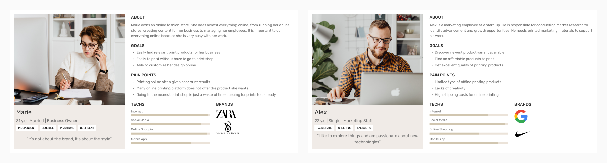
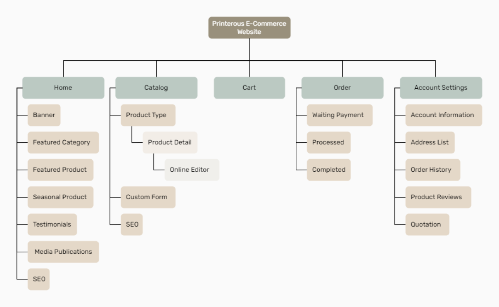
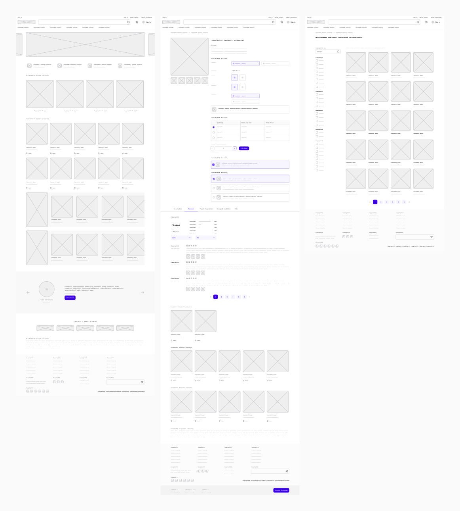
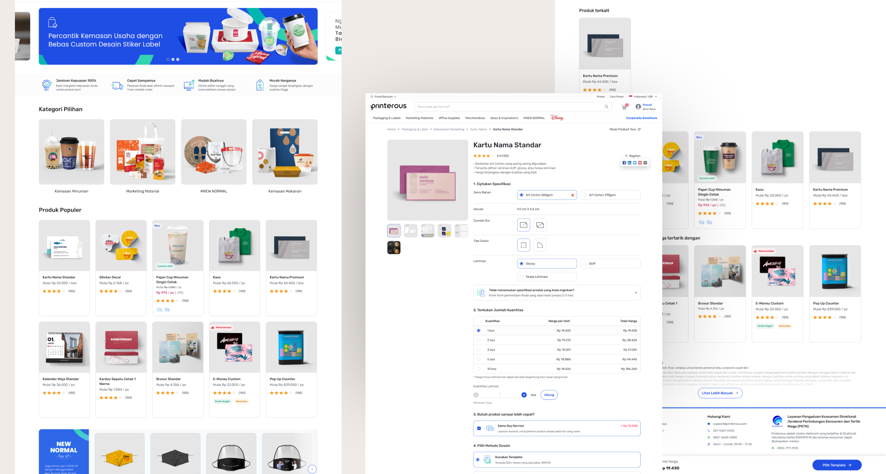
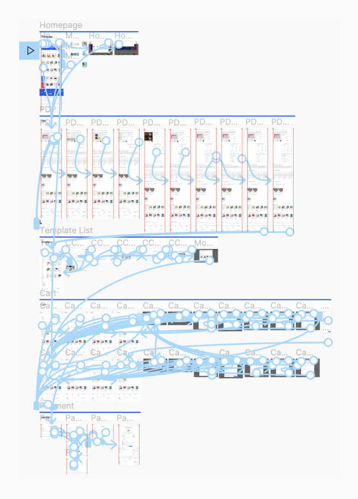
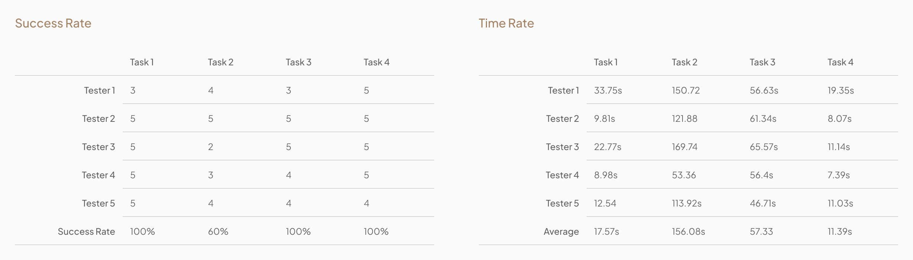

Kisi Cerita
At Printerous, printing made easy. Anytime, anywhere.
Timeline
Jan - Jun 2022

Project Overview
The Product
Printerous is Indonesia's largest online printing platform that currently connects more than 200 printing service providers with more than 5,000 businesses in 20 cities in Indonesia. To meet the printing needs of individuals, Printerous decided to launch an e-commerce website to make printing easier without having to wait in line for hours or go through traffic to get to the nearest print shop.
The Problem
The product details page of their e-commerce website has been plagued by a staggering 67% drop rate before users even add items to their shopping carts. This alarming drop-off rate has raised concerns within the company, as it indicates a significant roadblock in their mission to make printing more convenient and accessible to individuals. There is an urgent need to address this issue and find solutions to ensure a seamless and user-friendly experience for their customers.
The Goals
Revamp the website, focusing on enhancing the customer experience by enabling seamless product personalization and optimizing the user flow to drive greater engagement and user interaction.
My role and responsibilities
- User research
- Wireframes
- Lo-Fi Prototype
- Usability Studies
- Hi-Fi Prototype
Foundational research
Summary
User research was conducted with a specific set of objectives in mind. This research aimed to describe the user's experience when using the product, identify pain points in the current product, and generate user experience (UX) solutions based on observable data. The respondents for this research were registered customers who had never made a purchase, spanning both male and female individuals aged between 21 and 35 and located nationwide. To gather comprehensive insights, a combination of quantitative surveys for initial respondent screening and qualitative phone and in-depth interviews were employed as the research methods. This approach allowed for a thorough examination of user experiences and challenges, ultimately informing UX enhancements.
Persona
These 2 personas were created to help our team focus on the main target audience and user groups of Printerous e-commerce site.
User Flows
We enhanced user flows by refining existing processes and addressing any identified flaws.

Sitemap
Informed by comprehensive user research, I established a solid framework for the Printerous website. My initial step involved crafting a well-defined sitemap to serve as a roadmap, effectively steering our user experiences in the right direction.
Wireframes
To gain an overview of the layout within our website, the next steps involved crafting a wireframe using the newly created user flow.
Mockups
High-fidelity prototype
Usability Testing
Usability testing involved online interviews via Zoom and prototype testing using Maze. We selected five respondents, representing Printerous users nationwide, aged 20-40. They completed tasks such as finding a standard business card, creating a business card, checking out, and proceeding to payment. This testing provided valuable insights into user satisfaction and platform improvements.
Usability Testing Results
Outcomes
- 50% decrease in the time it took users to create product
- 2X faster for users to find products
- 70% of users completed all order process